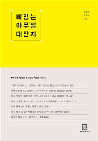

일을 시작하면 임계점을 넘긴일
시작이 어렵다고 하지만, 나는 끝을 내는 일이 훨씬 어려운 것 같다.. 20대에는 성취한 일보다 포기한 일이 압도적으로 많다. 어렵고 하기 싫은일 투성이 였지만, 그래도 미래에 도움이 될것 같은 일은 꾸역꾸역 끝까지 해냈다. 악착같이 끝까지 해냈다고 능력이 비약적으로 발전하지는 않았지만, 그렇게 끝을 봤던 것은 스티브 잡스의 말처럼 하나의 점이 되어 미래에 다른 일과 연결되어 큰 도움이 되는 경우가 많았다.((뼈있는 아무말 대잔치-내가 20대에 정말 잘한 3가지))

이 일기를 쓰기 바로 직전에 일었던 책 안에 나오는 내용인데,나름 나에게 위로도 되고 힘이 되는 내용이었다.예전에 삼성인턴 채용 준비할 때 나를 붙잡던 말은 경수형의 포기하지만 말라는 말이었다.포기함과 포기하지 않는것을 비교했을때 당연히 눈앞에 보이는 포기함이 더 쉬워보인다. 하지만 나에게 남는게 없지 않는가?
끝까지 해내면 이것이 좋든 나쁘든 끝이라는 것이 난다. 그것은 언젠가는 내가 써먹거나 사용 되는 일이 있을것이다. 지금 무언가 도망가는 일을 도 쉽게 하는것이 나를 붙잡아 놓는 목표의 부재 때문이 아닐까도 생각해봤다. 고등학교때는 홍익대학교를 가고 싶다는 강렬한 목표가 있었다. 그래서 공부도 그렇게 열심히 했었지.. 결국 홍대는 못갔지만 그렇게 높게 꿈꾸지 못했다면 한양대라는 곳에도 도달하지 못했겠지...